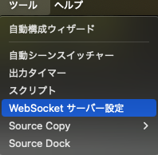
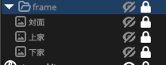

麻雀配信者専用枠認識プログラム
ブラウザー上で音声認識を行い、特定のキーワードに応じてOBS上の画像ソースの表示/非表示を切り替えます。
本サイトを使用することで発生したいかなる損害についても、作者は責任を負いませんので、自己責任でご利用ください。
OBSのパスワードはOBSのメニュー上部のツール >
websocketサーバー設定から調べてください。
詳しい設定方法は使い方ガイドをご覧ください。
音声認識機能
---クリックで使い方ガイドを表示---
使い方ガイド
-
OBSの準備-１(設定の確認)：
- OBS Studioを起動します。
-
メニューバーの「ツール」>「websocketサーバー設定」を開きます。

-
「WebSocketサーバーを有効にする」にチェックが入っていることを確認します。
-
「サーバーポート」（デフォルト:
4455）と、「認証を有効にする」がチェックされている場合は「パスワード」をメモします。
- 「OK」または「適用」をクリックします。
-
OBSの準備-２（素材の配置）：
- OBSのソースに「frame」という名前のフォルダを作成します。
-
「frame」フォルダの中に「上家」「下家」「対面」という名前の画像ソースを準備します。

使用する画像は、こういう枠組みの画像でも、指のマークでも、何でも構いません。
-
OBSへの接続:
-
このページの「ポート番号」と「パスワード」（認証を有効にしている場合）の入力欄に、OBSで確認した情報を入力します。
- 「OBSに接続」ボタンをクリックします。
-
「OBS接続状態」が
接続済み になれば成功です。
-
音声認識の開始:
-
「認識開始」ボタンをクリックします。ブラウザによってはマイクの使用許可を求められますので、許可してください。
-
マイクに向かって話すと、認識されたテキストが画面下部に表示されます。
-
設定されたキーワード（
「上家、下家、対面」）を話すと、OBS上で対応する画像ソースが表示されます。
３秒後に、非表示に戻ります。
-
音声認識の停止:
- 「認識停止」ボタンをクリックすると、音声認識が終了します。
-
注意点:
-
音声認識はブラウザの機能を使用しているため、ブラウザの種類やバージョン、ネットワーク環境によって精度が変わることがあります。
-
音声が認識されづらい時は、ブラウザーのマイクがOBSと同じものを使っているか確認してください。
-
OBSのwebsocket設定は、OBSのアップデートなどで変更される可能性があります。接続できなくなった場合は、再度設定を確認してください。
-
ご意見・ご要望